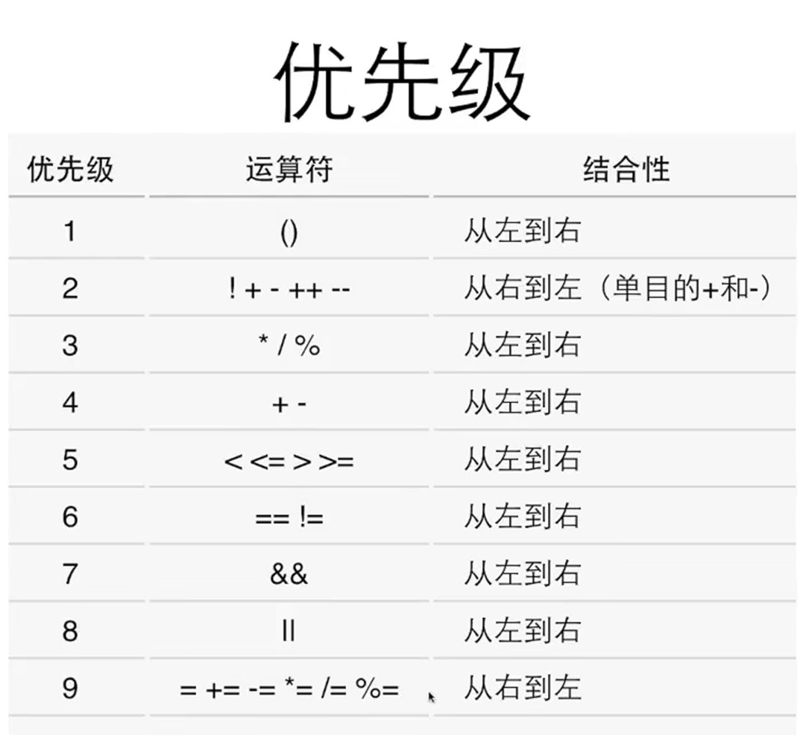

学习C语言时一些容易忘记的格式和混淆点
学习自b站翁恺
2.1.4变量输入
printf格式
printf("%d", a)
scanf格式
scanf("%d",&a)
问题
问题一
printf("%d",a)中的“，”必须加。
问题二
scanf函数使用过程中，“ ”内的内容必须全部输入，有下例
|
|
若在输入时省略了“，”，b输出的值错误。
getchar和putchar函数的用法
学习自https://blog.csdn.net/m0_65601072/article/details/124650579
2.2.4复合赋值和递增递减
复合赋值
+=，-=，*=，/=
先计算等号右边，后对左侧值进行计算，如例
total *= 12+6等价于total = total * (12+6)
递增递减运算符
属于单目运算符，只有一个算子，且算子必为变量
前缀后缀
++，–可放在算子的前后，前缀后缀的不同导致算子的值在某些步骤中不同，如例
使用a++时
|
|
结果为
|
|
使用++a时
|
|
结果为
|
|
可以看出，当使用后缀时，a++的值仍等于a，执行后a的值变为11；使用前缀时，++a的值等于11，执行后a的值也为11。
即，使用前缀时，先执行使a加上1的步骤；使用后缀时，后执行使a加上1的步骤
3.2.2判断条件
!=不相等，==相对
判断是否相等的关系运算符优先级小于判断条件运算符
3.2.3找零计算器——注释
//用于单行
/**/用于多行
3.2.4否则
if的完整格式
|
|
注意:小括号后不接分号
3.2.5if再探
if的另一种形式，如例
|
|
不接大括号时，执行的语句为紧接的下一句
3.3.1ifelse嵌套
else关联最近的if
3.3.2级联的if
如例
|
|
3.3.4多路分支:switch-case语句
switch-case语句格式
|
|
控制表达式只能是整型的结果
常量可以是常数，也可以是常数表达式，还可以是整型变量
若没有break，则继续向下一个case执行，直到遇到一个可执行的break，才会跳出整个switch语句
4.1.1循环
4.1.2while语句
while语句格式
如例
|
|
验证
常用验证数据:个位数；10；0；负数
调试
4.1.3do-while循环
格式，如例
|
|
4.2.2猜数
4.2.3算平均数
|
|
1.0可以使两个整型变量运算结果变为浮点型
4.2.4整数求逆
5.5.1for循环
for的格式
|
|
第一次进入循环时，循环每轮要进行的动作不进行，通过循环体后进行这个动作，再进行判断条件
()内的三个表达式可以任意拿去，但分号不可省
5.1.2循环的计算和选择:计算循环的次数，选择不同的循环
for循环等价于while循环
如果循环有固定次数，用for
如果必须执行一次，用do-while
其他情况用while
5.2.1循环控制，如何用break和continue控制循环
break可用于for语句中用于中止循环
continue可用于for语句和while语句中用于跳过循环，如例：
|
|
结果为
|
|
例二
|
|
结果为
|
|
continue相关内容学习自https://blog.csdn.net/m0_58244165/article/details/130676075
5.2.2嵌套的循环
5.2.3离开多重循环
例题：用一角，两角，五角凑出两元钱，输出所有方法
|
|
若想只让其输出一种方法，需要从多重循环中跳出，方法如下
方法一接力break
|
|
方法二goto语句
|
|
5.3.2整数分解
5.3.3最大公约数
6.2.1数据类型
1.c语言的类型
-
整数
char、short、int、long、long long
-
浮点数
float、double、long double
-
逻辑
bool
-
指针
-
自定义类型
2.类型的不同
-
输入输出时的格式化
格式表https://blog.csdn.net/TTTSEP9TH2244/article/details/115742295
-
表达的数的范围
char<short<int<float<double
-
内存中占据的大小
1到16字节
sizeof(int)能直接取得int类型占据的字节数，如例
1 2 3 4 5 6#include <stdio.h> int main() { printf("sizeof(int)=%ld", sizeof(int)); return 0; }结果为
sizeof(int)=4sizeof是静态运算符，结果在编译时就已决定，故不可在括号中做运算
-
内存中的表达形式
整型是二进制数(补码)，浮点数是编码
所以浮点数之间不可以直接相加减
6.2.2整数类型
int无固定大小，取决于寄存器一次处理的大小
6.2.3整数的内部表达
二进制表达，如例
亿字节表达的数的范围
0000000 = 0
11111111 = 255
二进制用补码的方式表达负数，具体表现形式看下面
6.2.4整数的范围
二进制的表示
对纯二进制来说，00000000~11111111表示0到255
而当作补码来看待时，1111111110000000表示-1-128，0000000101111111表示1127
首位为0时为正数，首位为1时为负数
如例
|
|
结果为
|
|
int表达的范围有4字节，即32比特，255转化为二进制后首位数字仍为0，如
00000000 00000000 00000000 11111111
而char表达的范围仅有1字节，即8比特，255转化为二进制第一位变为1，故变为负数，如
11111111
各个类型整数表达的范围
char 1字节 -128~+127
short 2字节 -32768~+32767
int 取决于编译器(cpu),一般是负的二的三十二减一次方~正的二的三十二减一次方减一
使用unsigned语言可以取消二进制被用于补码的情况，如例
|
|
结果为
c=255,i=255
使用unsigned后，char的范围扩大一倍，变为0~255
6.2.5整数的格式化输入输出
%d：用于char，short，int
%u：unsigned
使用%u时，所有小于int的整数类型都会转化为int输出，如例
|
|
结果为
c=4294967295,i=4294967295
%ld： long long
%lu： unsigned long long
重要的不是计算机中储存的是什么数字，而是我们该如何正确看待并使用
6.2.6选择整数类型
6.2.7浮点类型
1.两种浮点类型
float：4个字节，输入格式%f，输出格式%f、%e
double：8个字节，输入格式%lf，输出格式%f、%e
%e用于科学计数法形式的输出，如例
|
|
结果为
1.234568e+003,1234.567890
2.输出精度
%.4f可指定输出格式保留四位小数
这种输出遵循四舍五入，仅对要求保留的小数位数的下一小数位进行四舍五入
6.2.8浮点数的范围和精度
浮点运算无精度，如例
|
|
结果为
not.n = 2.4679999352
对c进行四舍五入后结果才为2.468，故浮点数不可直接用来当作判断条件
为何数字后要加f：对于一个小数，不加f的话被视为double型浮点数，加上后变为float型浮点数
如何用浮点数做判断条件：可以用fabs( f1 - f2 ) < 1e-12来判断f1与f2是否相等，fabs()语法求括号中运算式的绝对值
故不可用浮点数做精密的计算
6.2.9字符类型
可以用‘1’来表示字符1，此时‘1’ == 49
6.2.10逃逸字符
\b:回退一行
\t：到下一个表格位
\n
\r：回车
\"：双引号
\'单引号
\\反斜杠本身
使用\b时要注意，先看下例
|
|
结果为
abc
说明，\b的作用不是直接删除前面一个元素，正确用法如例
|
|
结果为
abC
\b的工作顺序是先退回前一个字符的前面，若\b后有字符的话，输出后面的字符代替原来的字符
6.2.11类型转换
自动类型转化
运算符两边类型不同时，小的类型向大的类型转换
对于printf，任何小于int的类型都会被转化为int；float会自动被转化为double
对于scanf，输入格式严格要求，输入short时用%hd，输入long long时用%ld
强制类型转化语法
用(类型)值的形式转化值的类型，如例
|
|
结果为
1
长类型转化为短类型时，会由于字节容量不同导致错误
强制转化类型语法优先级大于所有无括号运算符
语法不会改变后面值本身，而是改变其输出形式
6.3.1逻辑类型
布尔语法bool
引入头文件stdbool.h后可以使用bool和true、false
bool本质上仍为整数类型，输出时只能输出1或0，输出格式也为%d
6.3.2逻辑运算
三种逻辑运算符
三种逻辑运算符的优先级为! > && > ||
！逻辑非，示例!a,当a为true时结果为false，反之亦然
&&逻辑与，示例a&&b,只有a和b都是true时结果为true，其他情况结果为false
||逻辑或，示例a||b,两个都为false时结果为false，其他情况结果为true
优先级
逻辑运算符优先级普遍低于比较运算符，但单目运算符优先级大于双目运算符
单目双目三目https://blog.csdn.net/weixin_42615026/article/details/105192252?ops_request_misc=&request_id=&biz_id=102&utm_term=%E5%8D%95%E7%9B%AE%E8%BF%90%E7%AE%97%E7%AC%A6&utm_medium=distribute.pc_search_result.none-task-blog-2
allsobaiduweb~default-1-105192252.142^v100^pc_search_result_base7&spm=1018.2226.3001.4187
如例
! a < 20
上行代码会先判断!a，则上式结果永远为1
! (a < 20)
上行代码会判断条件a<20
以下为目前所有运算符的优先级列表

短路
逻辑运算符的运算自左向右进行，当左边满足逻辑运算符完成计算时，右边不进行判断
即对于&&，左边为false时右边不进行判断；对于||，左边为true时右边不进行判断
故不要在逻辑运算式中写自增自减等运算
6.3.3条件运算和逗号运算
条件运算
不建议用，可读性差
逗号运算
一般用于for的条件括号中，用于为for的循环增加多个条件变量，如例
for(i = 0 , j = 0 ;...;...)
7.1.1函数
代码重复表示代码质量不良，使用函数可以避免代码重复
7.1.2函数的定义与使用
函数定义
|
|
调用函数
没有参数时，()不能省略
7.1.3从函数中返回
函数中用return返回输出的值
7.2.1函数原型
想把调用的函数放在main的下面，需要在main前对函数原型进行声明，如例
|
|
7.2.2参数传递
调用函数只会向main函数中传递值，不会影响main中的变量
7.2.3本地变量
本地变量的生存期和作用域取决于其所定义的块内，块即为大括号，如例
|
|
结果为
|
|
定义在if内部的a离开if大括号后不再存在，不会影响大括号外部的a
7.2.4函数庶事
调用函数若没有参数，在括号中写void
8.1.1初试数组
遍历数组：数组中的每一个数都判断一遍
8.1.2定义数组
int a[10]
a数组中共可储存十个整型数值，但最大下标仅为9，即a[9]
即数组从零开始计数
8.1.3数组例子
使用数组前，最好对数组中的每一个数值初始化
8.2.1数组计算
数组集成初始化格式
int a[] = {2,4,3}
编译器自动记录数组的数值个数
也可以如下
|
|
此时数组a中的值分别为1 0 0
当数组中的数值初始化时，有几个数组不是0，可用下例定义法
|
|
此时数组a的数值为0 2 3 0 0 6
*3为紧跟前一个下标的下一个数值
此种定义法也可以规定数组的下标
数组的大小
可用sizeof(a)/sizeof(a[0])计算数组的大小
数组的循环
多用for循环做遍历数组
8.2.2数组例子：素数
8.2.3二维数组
二维数组的定义
int a[行数][列数]
二维数组的初始化
使用集成初始化时数组的列数不可省略，如例
|
|
9.1.1取地址运算:&运算符取得变量地址
sizeof
sizeof(变量或类型)可取得变量或类型所占字节
运算符&
作用:取得变量地址，操作数必须为变量
地址的输出格式:%p
地址的格式一般为16进制，但输出格式不能使用十六进制的输出格式%x，虽然有的编译器结果相同，但会报错
&不能取的地址
运算式:如a+b i++ ++i
9.1.2指针
定义
指针是用来保存地址的变量，定义例子如下
|
|
指针变量
变量的值是内存的地址
普通变量的值是实际的值
指针变量的值是具有实际值的变量的地址
作为参数的指针
void f(int *p);在被调用时得到了某个变量的地址
主函数中i的地址被调用到f()函数中，故在f()函数里面可以通过指针访问主函数中的变量i
不同于f(int p)，它只能把main函数中变量i的值取到自己函数中，不能读写i的值
单目运算符*
*是一个单目运算符，用来访问指针的值所表示的地址上的变量
可以做右值也可以做左值，如例
|
|
一些小疑问
|
|
- *p在f()中成为解引用操作符，可以访问p所指向的内存地址中的值
- 以%p形式输出变量p时可以输出i的地址
拓展
|
|
此行代码可以运行，但会报错，原因如下：
scanf认为输入的整数值为i的地址，如输入整数6，scanf会对地址为6的空间进行操作，而因为地址6中有重要的东西，故会报错
9.1.3指针的使用
应用场景一、交换两变量的值
如例
|
|
应用场景二a、返回多个值
函数返回多个值，某些值就只能通过指针返回
传输的参数实际上时需要保存带回的结果的变量
C或C++中，函数通常只能返回一个值
如例
|
|
应用场景二b、
函数返回运算的状态，结果通过指针返回。
常用的做法是让函数返回特殊的、不属于有效范围内的值来表示出错，例如 - 1 或 0（在文件操作中常见）。
当任何数值都是有效的可能结果时，就需要分开返回。
如例
|
|
备注：
if判断条件通过调用divide函数并检查其返回值来决定是否执行printf语句。如果divide函数返回 1，表示除法成功，if条件为真；如果divide函数返回 0，表示除法失败，if条件为假。
后续的编程语言（如 C++、Java）采用了异常机制来解决这个问题。
常见错误
没有给指针指向变量，就更改指针的值，会导致指针默认指向的地址中的值被更改，可能导致程序出错。
9.1.4指针与数组
数组实际上是一种特别的指针，如例
|
|
结果为
|
|
可得，main中的a与f中的a地址相同，故两函数中的数组a为同一数组，可认为main中的数组a以指针形式存在，才可不经过像变量一样不读取地址直接输出其地址，并在两函数中地址相同
即，如果在f函数中对数组a中的值进行更改，main函数中的值也会随之更改，如例
|
|
结果为
|
|
这也解释了为何printf中a[0]前为何不用加&
但是在main函数中的数组和在参数表中的数组并不完全相同，参数表中的数组a是完全以指针形式存在的，例子如下
|
|
结果为
|
|
解释
在main函数中：
sizeof(a)返回整个数组a所占用的字节数。因为a是包含 3 个int元素的数组，假设int占 4 字节，sizeof(a)为3 * 4 = 12字节。sizeof(a[0])返回一个int元素的字节数，即 4 字节。
在f函数中：
sizeof(a)返回指针a所占用的字节数。在 32 位系统中，指针占 4 字节；在 64 位系统中，指针占 8 字节。sizeof(a[0])返回a[0]**（通过指针解引用访问的元素）**的字节数，即 4 字节。
拓展
[]用于指针
[]也可以作用于指针，如例
|
|
结果为
|
|
数组变量实质
数组变量实质上是const的指针，所以不能被赋值
细说const
在 C 语言中，const关键字用于定义常量，被它修饰的变量的值是不可以被修改的，这有助于增强程序的安全性和可读性。例如：
|
|
const修饰指针时有以下几种不同情况：
-
指向常量的指针（const在*前）
1 2 3 4 5 6 7 8const int* ptr; int a = 10; ptr = &a; // 下面这行是错误的，不能通过这个指针去修改它所指向的常量值 // *ptr = 20; int b = 30; // 但这个指针本身可以指向其他变量，以下操作合法 ptr = &b; -
常量指针（const在*后）
1 2 3 4 5 6 7int a = 10; int* const ptr = &a; // 可以通过这个指针修改它所指向的值，以下操作合法 *ptr = 20; int b = 30; // 不过这个指针不能再指向其他变量了，下面操作是错误的 // ptr = &b; -
指向常量的常量指针（const在*前后都有）
1 2 3 4 5 6 7int a = 10; const int* const ptr = &a; // 既不能通过这个指针修改它所指向的值，下面操作是错误的 // *ptr = 20; int b = 30; // 也不能让这个指针再指向其他变量，以下操作错误 // ptr = &b;
在函数参数中使用const，可以防止函数内部意外地修改参数的值。比如：
|
|
数组
数组本质上属于常量指针，即它可以修改所指向的变量的值，但是不能修改指向的变量对象，如例
|
|
9.1.5指针与const
上节的拓展…
const数组
当想定义一个数组，即常量指针为指向常量的常量指针时，必须对数组中的每个变量进行赋值
9.2.1指针运算
指针与整数的运算
如例
|
|
结果为
|
|
char的空间为1个字节，int的空间为4个字节，故可得指针与整数之间的运算实际上为对指针所指的地址进行改变，上述代码中即为对p的地址加上了sizeof(char),对q的地址加上了sizeof(int)。
得出，我们可以用指针运算的方式得出数组第二位的元素，如下
|
|
结果为
|
|
指针与指针的运算
注: 当你想要获取数组中某个特定元素的地址时，需要使用&符号。例如，&ac[5]表示获取ac数组中第 6 个元素（索引为 5）的地址。
如例：
|
|
结果为
|
|
指针相减的结果为空间的大小，p1-p结果为五个char的大小，即五个字节，q1-q 结果为6，而 4*6=24=十六进制q1-q的值，故
指针相减的结果为地址数相减后除以类型空间大小
*p++
作用：取出p所指的数据，并把p移到下一位置
注：++优先级大于*；常用于数组类的连续空间操作；某些CPU上，*p++可直接被翻译成一条汇编指令。
如例：
|
|
++ 等类似操作计算更快
指针比较
0地址
注：任何一个进程都有一个虚拟的0地址
内存中存在0地址，但0地址通常是不能随意访问的。
指针不应该具有0值。
0地址可以用来表示一些特殊情况，例如返回的指针无效、指针未被真正初始化（先初始化为0）。
NULL是一个预定义符号，表示0地址。
有些编译器不允许用0来表示0地址。
指针的类型
不同类型的指针一般不互相赋值，可能产生问题
指针的类型转换（新手不要轻易尝试）
void*表示不知道指向什么东西的指针，计算时与char*相同（但不相通）
指针也可以转换类型，如
|
|
这并没有改变p所指的变量的类型，而是让后人用不同的眼光通过p看它所指的变量
指针的用处
- 需要传入较大的数据时用作参数
- 传入数组后对数组做操作
- 函数返回不止一个结果
- 需要用函数来修改不止一个变量
- 动态申请的内存…
9.2.2动态内存分配
之后再说
C语言库函数
math.h函数库
https://www.runoob.com/cprogramming/c-standard-library-math-h.html